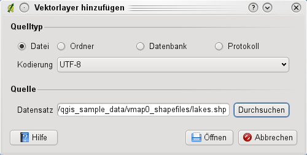

Unterstützte Datenformate
KADAS verwendet die OGR-bibliothek um Vektordatenformate zu lesen und zu schreiben, einschließlich ESRI Shapedateien, MapInfo und MicroStation Dateiformate, AutoCAD DXF, PostGIS, SpatiaLite, Oracle Spatial und MSSQL Spatial Datenbanken und viele mehr. GRASS Vektor und PostgreSQL Support wird duch native Datenprovider Plugins bereitgestellt. Die Vektordaten können auch im Lesemodus aus zip- und gzip-Archiven ins KADAS geladen werden. Zum Zeitpunkt der Erstellung dieses Dokumentes werden 69 Vektorformate von der OGR-Bibliothek unterstützt (siehe OGR-SOFTWARE-SUITE in literature_and_web). Die vollständige Liste ist auf http://www.gdal.org/ogr/ogr_formats.html zu finden.
ESRI Shapes
Die ESRI Shapedatei ist das Standard Vektorformat in QGIS und wird durch die OGR Simple Feature Library (http://www.gdal.org/ogr/ ) bereitgestellt.
Ein Shape besteht derzeit aus mehreren Dateien. Die folgenden drei sind erforderlich:
shpDatei (enthält die Geometrien).dbfDatei (enthält die Attribute im dBase-Format).shxIndexdatei
Darüber hinaus kann eine Datei mit .prj Endung existieren. Diese enthält die Projektionsinformationen des Shapes. Während es sehr nützlich ist eine Projektionsdatei zu verwenden ist dies nicht zwingend erforderlich. Ein Shape-Datensatz kann zusätzliche Dateien enthalten. Details dazu finden sich in der technischen Spezifikation von ESRI unter http://www.esri.com/library/whitepapers/pdfs/shapefile.pdf.
Shape Layer laden
When loading a vector layer, the following dialog opens:
Figure Vector 1:
 Vektorlayer hinzufügen Dialog
Wählen Sie aus den möglichen Quelltypen  Datei und klicken Sie auf den Knopf [Durchsuchen]. Dadurch erscheint ein weiterer Dialog zum Öffnen (siehe figure_vector_2) mit dem Sie im Dateisystem navigieren können und Sie ein Shape oder eine andere unterstützte Datenquelle laden können. Die Auswahlbox Filter
Datei und klicken Sie auf den Knopf [Durchsuchen]. Dadurch erscheint ein weiterer Dialog zum Öffnen (siehe figure_vector_2) mit dem Sie im Dateisystem navigieren können und Sie ein Shape oder eine andere unterstützte Datenquelle laden können. Die Auswahlbox Filter  ermöglicht es Ihnen einige OGR-untersützte Dateiformate vorzuwählen.
ermöglicht es Ihnen einige OGR-untersützte Dateiformate vorzuwählen.
Außerdem kann auch der Kodierungstyp für die Shapedatei eingestellt werden, falls dies notwendig ist.
Figure Vector 2:
 Öffnen eines OGR-Vektorlayers Dialog
Öffnen eines OGR-Vektorlayers Dialog
Selecting a shapefile from the list and clicking [Open] loads it into KADAS.
Tipp
Farben von Vektorlayern
Wenn Sie einen neuen Vektorlayer in QGIS laden, werden Farben zufällig zugewiesen. Wenn Sie mehrere neue Vektorlayer laden, werden jeweils unterschiedliche Farben zugewiesen.
Nach dem Laden können Sie mit den Navigationstools aus der Werkzeugleiste beliebig zoomen. Um den Stil eines Layers zu verändern öffnen Sie den Layereigenschaften Dialog in dem Sie auf den Layernamen doppelklicken oder indem Sie einen Rechtsklick auf den Namen in der Legende machen und Eigenschaften im Popupmenu wählen. Vergleichen Sie Abschnitt vector_style_tab für weitere Informationen zum Editieren der Eigenschaften von Vektorlayern.
Die Darstellungsgeschwindigkeit von Shapdedateien verbessern
Um die Darstellungsgeschwindigkeit zu optimieren, kann ein räumlicher Index erstellt werden. Ein räumlicher Index erhöht die Geschwindigkeit beim Zoomen und Verschieben. Räumliche Indizes haben in KADAS die Endung .qix.
Benutzen Sie folgende Schritte zum Erstellen eines räumlichen Index:
Um eine Shapedatei zu laden klicken Sie auf den
 Vektorlayer\ hinzufügen Knopf in der Werkzeugleiste oder drücken einfach
Vektorlayer\ hinzufügen Knopf in der Werkzeugleiste oder drücken einfach Strg+Umschalt+V.Öffnen Sie den Eigenschaften-Dialog des Vektorlayers, indem Sie auf den Namen des Layers in der Legende doppelklicken oder mit der rechten Maustaste Eigenschaften auswählen.
Im Menü Allgemein klicken Sie auf den [Räumlichen Index erzeugen] Knopf.
Problem beim Laden eines Shapes mit .prj Datei
Wenn Sie eine Shapedatei mit .prj-Datei laden und KADAS ist nicht in der Lage, die Projektionsinformationen korrekt auszulesen, ist es notwendig das Koordinatenbezugsystem (KBS) manuell im Allgemein Menü des Layereigenschaften Dialog anhand des [Festlegen ...] Knopfs anzugeben. Hintergrund ist, dass .prj Dateien oftmals nicht die vollständigen Projektionsparameter enthalten, so wie KADAS sie benötigt und auch im KBS Dialog anzeigt.
Aus diesem Grund, wenn Sie ein neues Shapefile mit KADAS erstellen, werden derzeit zwei unterschiedliche Projektionsdateien angelegt. Eine .prj Datei, mit den unvollständigen Projektionsparametern, wie sie z.B. von ESRI Software gelesen und erstellt wird, und eine .qpj Datei, in der die vollständigen Projektionsparameter anthalten sind. Wenn Sie dann ein Shape in KADAS laden, und QGIS findet eine .qpj Datei, dann wird diese anstelle der .prj Datei benutzt.
MapInfo Layer laden
To load a MapInfo layer, change the file type filter Files of type : to ‘Mapinfo File [OGR] (*.mif *.tab *.MIF *.TAB)’ and select the MapInfo layer you want to load.
ArcInfo Binary Coverage laden
To load an ArcInfo Binary Coverage, select Directory as Source type. Change the file type filter Files of type to ‘Arc/Info Binary Coverage’. Navigate to the directory that contains the coverage file, and select it.
Auf die gleiche Art und Weise können auch andere Verzeichnis-basierte Vektorlayer geladen werden, wie etwa das U.K. National Transfer Format oder das raw TIGER Format des U.S. Census Bureau.